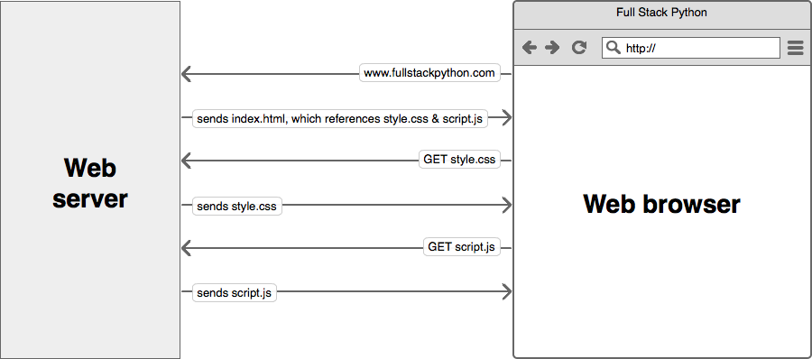
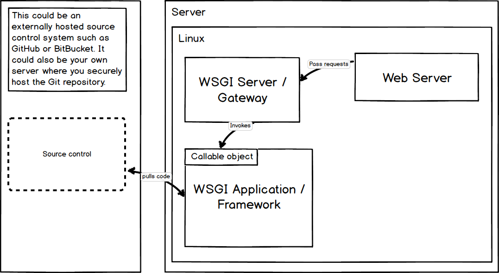
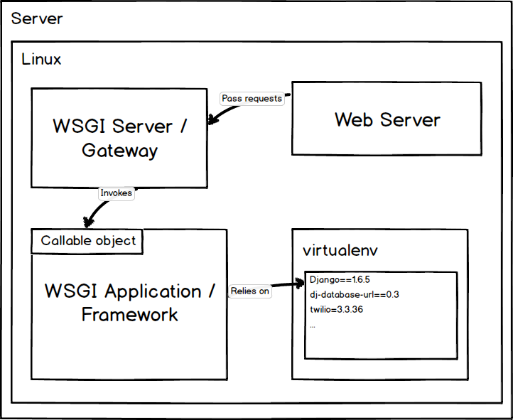

You're knee deep in learning the Python programming language. The syntax is starting to make sense. The first few "ahh-ha!" moments are hitting you as you're learning conditional statements, for loops and classes while playing around with the open source libraries that make Python such an amazing language.
Now you want to take your initial Python knowledge and make something real. A real web application that's available on the web which you can show off or sell as a service to other people. That's where Full Stack Python comes in. You've come to the right place to learn everything you need to deploy and run a production Python web application.
This guide branches out on topic because your learning needs depend on what you're currently trying to do.
A web application framework is a code library that makes a developer's life easier when building reliable, scalable and maintainable web applications.
Web frameworks encapsulate what developers have learned over the past twenty years while building dynamic web applications. Frameworks make it easier to reuse code for common HTTP operations and to structure your code so that it is maintainable.
Frameworks provide functionality in their code or through extensions to perform common operations required to run web applications. These common operations include:
Not all web frameworks include code for all of the above functionality. Frameworks fall somewhere between simply executing a single use case and attempting to be everything to every developer with increased complexity. Some frameworks take the "batteries-included" approach where everything possible comes bundled with the framework while others have a minimal code library that plays well with extensions.
For example, the Django web application framework includes an Object-Relational Mapping (ORM) layer that abstracts relational database read, write, query, and delete operations. However, Django's ORM cannot work without significant modification on non-relational databases such as MongoDB. Some other web frameworks such as Flask and Pyramid are easier to use with non-relational databases by incorporating external Python libraries. There is a spectrum between minimal functionality with easy extensibility and including everything in the framework with tight integration.
"What is a web framework?" by Jeff Knupp is an in-depth explanation of what a web framework is and their relation to web servers.
Check out the answer to the "What is a web framework and how does it compare to LAMP?" question on Stack Overflow.
Django vs Flask vs Pyramid: Choosing a Python Web Framework contains background information and code comparisons for similar web applications built in these three big Python frameworks.
This Python web framework roundup covers Django, Flask and Bottle as well as several other lesser known Python frameworks.
This fascinating blog post takes a look at the code complexity of several Python web frameworks by providing visualizations based on their code bases.
Choose a major Python web framework (Django or Flask are recommended) and stick with it. When you're just starting it's best to learn one framework first instead of bouncing around trying to understand every framework.
Work through a detailed tutorial found within the resources links on the framework's page.
Study open source examples built with your framework of choice so you can take parts of those projects and reuse the code in your application.
Build the first simple iteration of your web application then go to the deployment section to make it accessible on the web.
Django is a widely used Python web application framework with a "batteries-included" philosophy. The principle behind batteries-included is that the common functionality for building web applications should come with the framework instead of as separate libraries.

For example, authentication, URL routing, a templating system, an object-relational mapper, and database schema migrations (as of version 1.7) are all included with the Django framework. Compare that included functionality to the Flask framework which requires a separate library such as Flask-Login to perform user authentication.
The batteries-included and extensibility philosophies are simply two different ways to tackle framework building. Neither philosophy is inherently better than the other.
The Django project's stability, performance and community have grown tremendously over the past decade since the framework's creation. Detailed tutorials and best practices are readily available on the web and in books. The framework continues to add significant new functionality such as database migrations with each release.
I highly recommend the Django framework as a starting place for new Python web developers because the official documentation and tutorials are some of the best anywhere in software development. Many cities also have Django-specific groups such as Django District, Django Boston and San Francisco Django so new developers can get help when they are stuck.
There's some debate on whether learning Python by using Django is a bad idea. However, that criticism is invalid if you take the time to learn the Python syntax and language semantics first before diving into web development.
Tango with Django is an extensive set of free introductions to using the most popular Python web framework. Several current developers said this book really helped them get over the initial framework learning curve.
2 Scoops of Django by Daniel Greenfeld and Audrey Roy is well worth the price of admission if you're serious about learning how to correctly develop Django websites.
Effective Django is another free introduction to the web framework.
The Django subreddit often has links to the latest resources for learning Django and is also a good spot to ask questions about it.
Lincoln Loop wrote a Django Best Practices guide for the community.
Steve Losh wrote an incredibly detailed Django Advice guide.
Lightweight Django has several nice examples for breaking Django into smaller simplier components.
The Definitive Guide to Django Deployment explains the architecture of the resulting set up and includes Chef scripts to automate the deployment.
Deploying a Django app on Amazon EC2 instance is a detailed walkthrough for deploying an example Django app to Amazon Web Services.
This step-by-step guide for Django shows how to transmit data via AJAX with JQuery.
Deploying Django on AWS is another walkthrough for deploying Django to AWS.
django-awesome is a curated list of Django libraries and resources.
Starting a Django Project answers the question, “How do I set up a Django (1.5, 1.6, or 1.7) project from scratch?”
Kate Heddleston and I gave a talk at DjangoCon 2014 called Choose Your Own Django Deployment Adventure which walked through many of the scenarios you'd face when deploying your first Django website.
GoDjango screencasts and tutorials are free short videos for learning how to build Django applications.
Getting Started with Django is a series of video tutorials for the framework.
DjangoCon US videos from
2014,
2013,
2012,
2011, as well as
earlier US and DjangoCon EU conferences are
all available free of charge.
Paul Hallett wrote a detailed Django 1.7 app upgrade guide on the Twilio blog from his experience working with the django-twilio package.
Designing Django's Migrations covers Django 1.7's new migrations from the main programmer of South and now Django's built-in migrations, Andrew Godwin.
Real Python's migrations primer explores the difference between South's migrations and the built-in Django 1.7 migrations as well as how you use them.
Andrew Pinkham's "Upgrading to Django 1.7" series is great learning material for understanding what's changed in this major release and how to adapt your Django project. Part 1, part 2 and part 3 are currently available with further parts coming in the future.
The Django ORM works well for simple and medium-complexity database operations. However, there are often complaints that the ORM makes complex queries much more complicated than writing straight SQL or using SQLAlchemy.
It's technically possible to drop down to SQL but it ties the queries to a specific database implementation. The ORM is coupled closely with Django so replacing the default ORM with SQLAlchemy is currently a hack workaround. Note though that some of the Django core committers believe it is only a matter of time before the default ORM is replaced with SQLAlchemy. It will be a large effort to get that working though so it's likely to come in Django 1.9 or later.
Since the majority of Django projects are tied to the default ORM, it's best to read up on advanced use cases and tools for doing your best work within the existing framework.
Django models, encapsulation and data integrity is a detailed article by Tom Christie on encapsulating Django models for data integrity.
Django Debug Toolbar is a powerful Django ORM database query inspection tool. Highly recommended during development to ensure you're writing reasonable query code. Django Silk is another inspection tool and has capabilities to do more than just SQL inspection.
Making a specific Django app faster is a Django performance blog post with some tips on measuring performance and optimizing based on the measured results.
Why I Hate the Django ORM is Alex Gaynor's overview of the bad designs decisions, some of which he made, while building the Django ORM.
Going Beyond Django ORM with Postgres is specific to using PostgreSQL with Django.
Txt 2 React is a full Django web app that allows audiences to text in during a presentation with feedback or questions.
Openduty is a website status checking and alert system similar to PagerDuty.
Courtside is a pick up sports web application written and maintained by the author of PyCoder's Weekly.
These two Django Interactive Voice Response (IVR) system web application repositorities part 1 and part 2 show you how to build a really cool Django application. There's also an accompanying blog post with detailed explanations of each step.
Caktus Group's Django project template is Django 1.6+ ready.
Cookiecutter Django is a project template from Daniel Greenfeld, for use with Audrey Roy's Cookiecutter. Heroku deployment-ready.
Two Scoops Django project template is also from the PyDanny and Audrey Roy. This one provides a quick scaffold described in the Two Scoops of Django book.
Install Django on your local development machine.
Work through the initial "polls" tutorial.
Build a few more simple applications using the tutorial resources found in the "Django resources" section.
Start coding your own Django project with help from the official documentation and resource links below. You'll make plenty of mistakes which is critical on your path to learning the right way to build applications.
Read 2 Scoops of Django to understand Django best practices and learn better ways of building Django web applications.
Move on to the deployment section to get your Django project on the web.
Flask is a Python web framework built with a
small core and easy-to-extend philosophy.

Flask is considered more Pythonic than Django because Flask web application code is in most cases more explicit. Flask is easy to get started with as a beginner because there is little boilerplate code for getting a simple app up and running.
For example, here's a valid "hello world" web application with Flask (the equivalent in Django would be significantly more code):
from flask import Flask app = Flask(__name__) @app.route('/') def hello_world(): return 'Hello World!' if __name__ == '__main__': app.run()
Flask was also written several years after Django and therefore learned from the Python community's reactions as the framework evolved. Jökull Sólberg wrote a great piece articulating to this effect in his experience switching between Flask and Django.
The 18-part Flask mega tutorial is an absolutely amazing starting resource for using the Flask framework. Yes, there are a lot of posts in the series. However, each post is focused on a single topic to contain the complexity while the reader is learning the framework. The whole series is well worth an in-depth read-through. The author is also wrote the new O'Reilly Flask Web Development book which is an excellent learning resource.
If you're looking for a fun introduction to Flask and WebSockets, check out my blog post on creating Choose Your Own Adventure Presentations with Reveal.js, Python and WebSockets. That post is my favorite technical walkthrough I've written to date. There is also a companion open source GitHub repository for the app with tags for each step in the blog post.
Branded MMS Coupon Generation with Python and Twilio is a Flask tutorial I wrote for building a web application that can send branded barcode coupons via MMS. The post goes through every step from a blank directory until you have a working app that you can deploy to Heroku.
Building a blog using Flask and AngularJS Part 1 is the first of a multipart series on working with Flask and an AngularJS front end. Part 2 is also available along with the source code.
The Flask Extensions Registry is a curated list of the best packages that extend Flask. It's the first location to look through when you're wondering how to do something that's not in the core framework.
Explore Flask is a public domain book that was previously backed on Kickstarter and cost money for about a year before being open sourced. The book explains best practices and patterns for building Flask apps.
Randall Degges wrote a detailed walkthrough for building a Flask app in 30 minutes.
Building an Analytics App with Flask is a detailed walkthrough for collecting and analyzing webpage analytics with your own Flask app.
Nice post by Jeff Knupp on Productionizing a Flask App.
Building Websites in Python with Flask is another walkthrough tutorial from first steps through getting bigger with Flask.
The Plank & Whittle blog has two posts, one on Packaging a Flask web app and another on Packaging a Flask app in a Debian package once you've built an app and want to deploy it.
The Tuts+ Flask tutorial is another great walkthrough for getting started with the framework.
Create Your Own Obnoxiously Simple Messaging App Just Like Yo is a silly walkthrough of very basic Flask web application that uses Nitrous.io to get started and Twilio for SMS.
Flask by Example: Part 1 shows the basic first steps for setting up a Flask project. Part 2 explains how to use PostgreSQL, SQLAlchemy and Alembic. Part 3 describes text processing with BeautifulSoup and NLTK. Part 4 shows how to build a task queue with Flask and Redis.
Along with the above FLask by Example series, there's also a Discover Flask series of videos. The GitHub repo contains the code and the 25+ videos are hosted on YouTube.
How to Structure Large Flask Applications covers a subject that comes up quickly once you begin adding significant functionality to your Flask application.
Video streaming with Flask is another fantastic tutorial by Miguel Grinberg that covers video streaming.
"One line of code cut our Flask page load times by 60% is an important note about optimizing Flask template cache size to dramatically increase performance in some cases.
Unit Testing Your Twilio App Using Python’s Flask and Nose covers integrating the Twilio API into a Flask application and how to test that functionality with nose.
The Flask documentation has some quick examples for how to deploy Flask with standalone WSGI containers.
Microblog is the companion open source project that goes along with Miguel Grinberg's O'Reilly Flask book.
Flask Foundation is a starting point for new Flask projects. There's also a companion website for the project that explains what extensions the base project includes.
Cookiecutter Flask is a project template for use with Cookiecutter.
Flaskr TDD takes the official Flask tutorial and adds test driven development and JQuery to the project.
Use the Flask App Engine Template for getting set up on Google App Engine with Flask.
Here is a note-taking app along with the source code in Gists.
Bean Counter is an open source Flask app for tracking coffee.
FlaskBB is a Flask app for a discussion forum.
Install Flask on your local development machine.
Work through the 18-part Flask tutorial listed first under "Flask resources" below.
Read through Flask Extensions Registry to find out what extensions you'll need to build your project.
Start coding your Flask app based on what you learned from the 18 part Flask tutorial plus open source example applications found below.
Move on to the deployment section to get your initial Flask project on the web.
Bottle is a WSGI-compliant single source file web framework with no external dependencies except for the standard library included with Python.
The official Bottle tutorial provides a thorough view of basic concepts and features for the framework.
Digital Ocean provides an extensive introductory post on Bottle.
This tutorial provides a walkthrough for getting started with Bottle.
Here's a short code snippet for creating a RESTful API with Bottle and MongoDB.
This tutorial is another Bottle walkthrough for creating a RESTful web API.
BAM! A Web Framework "Short Stack" is a walkthrough of using Bottle, Apache and MongoDB to create a web application.
Decanter is a library for structuring Bottle projects.
Download Bottle or
install via pip with pip install bottle on your local development machine.
Work through the official Bottle tutorial.
Start coding your Bottle app based on what you learned in the official tutorial plus reading open source example applications found below.
Move on to the deployment section to get your initial Bottle application on the web.
Python has a significant number of web frameworks outside the usual Django, Flask and Bottle suspects.
The Pyramid framework stems from the Pylons project which develops a set of open source web application frameworks. Pyramid applications are built using a model-view-controller architecture.
TurboGears2 born as a full stack layer on top of Pylons is now a standalone web framework that can act both as a full stack solution (like Django) or as a micro framework.
Falcon is a minimalist web framework designed with web application speed as a top priority.
Morepath is a micro web framework that routes URLs directly to model code.
web.py is a Python web framework designed for simplicity in building web applications.
Web2py is a batteries-included philosophy framework with project structure based on model-view-controller patterns.
This roundup of 14 minimal Python frameworks contains both familiar and less known Python libraries.
The web micro-framework battle presentation goes over Bottle, Flask, and many other lesser known Python web frameworks.
A Python newcomer asked the Python Subreddit to explain the differences between numerous Python web frameworks and received some interesting responses from other users.
Read through the web frameworks listed above and check out their project websites.
It's useful to know what other web frameworks exist besides Django and Flask. However, when you're just starting to learn to program there are significantly more tutorials and resources for Django and Flask on the web. My recommendation is to start with one of those two frameworks then expand your knowledge from there.
Deployment involves packaging up your web application and putting it in a production environment that can run the app.
Your web application must live somewhere other than your own desktop or laptop. A production environment is the canonical version of your current application and its associated data.
Python web application deployments are comprised of many pieces that need to be individually configured. Here is a map that visually depicts how each deployment topic relates to each other. Click the image to pull up a PDF version.

There are four options for deploying and hosting a web application:
The first three options are similar. The deployer needs to provision one or more servers with a Linux distribution. System packages, a web server, WSGI server, database and the Python environment are then installed. Finally the application can be pulled from source and installed in the environment.
Note that there are other ways of installing a Python web application through system-specific package management systems. We won't cover those in this guide as they are considered advanced deployment techniques.
Thoughts on web application deployment walks through stages of deployment with source control, planning, continuous deployment and monitoring the results.
Practical continuous deployment defines delivery versus deployment and walks through a continuous deployment workflow.
If you're using Flask this detailed post on deploying it to Ubuntu is a great way to familiarize yourself with the deployment process.
If you're tight on time look at the platform-as-a-service (PaaS) options. You can deploy a low traffic project web app for free or low cost. You won't have to worry about setting up the operating system and web server compared to going the traditional server route. In theory you should be able to get your application live on the web sooner with PaaS hosting.
Traditional server options are your best bet for learning how the entire Python web stack works. You'll often save money with a virtual private server instead of a platform-as-a-service as you scale up.
Read about servers, operating systems, web servers and WSGI servers to get a broad picture of what components need to be set up to run a Python web application.
Servers are the physical infrastructure to run all the layers of software so your web application can respond to requests from clients such as web browsers.
Your web application must live somewhere other than your own desktop or laptop. Servers should ideally be accessible 24 hours a day, 7 days a week, with no unplanned downtime. The servers that host your web application for actual users (as opposed to test users) are known as production servers. Production servers hold real data (again as opposed to test data) and must be secure against unauthorized access.
The term bare metal refers to purchasing the actual hardware and hooking it up to the Internet either through a business-class internet service provider (ISP) or co-locating the server with other servers. A "business-class" ISP is necessary because most residential Internet service agreements explicitly prohibit running web servers on their networks. You may be able to get away with low traffic volume but if your site serves a lot of traffic it will alert an ISP's filters.
The bare metal option offers the most control over the server configuration, usually has the highest performance for the price, but also is the most expensive upfront option and the highest ongoing maintenance. With bare metal servers the ongoing operating cost is the electricity the server(s) use as well as handling repairs when server components malfunction. You're taking on manual labor working with hardware as well as the rest of the software stack.
Buy actual hardware from a vendor either pre-built or as a collection of components that you assemble yourself. You can also buy pre-configured servers from Dell or HP. Those servers tend to be in smaller case form factors (called "blades") but are correspondingly more expensive than putting off-the-shelf components together yourself in a standard computer case.
Virtual private servers (VPSs) are slices of hardware on top of a larger bare metal server. Virtualization software such as Xen and VMWare allow providers such as Linode and prgmr (as well as a many others) to provide fractions of a full server that appear as their own instances. For example, a server with an 8-core Xeon processor and 16 gigabytes of memory can be sliced into 8 pieces with the equivalent of 1-core and 2 gigabytes of memory.
The primary disadvantage of virtualized servers is that there is resource overhead in the virtualization process. In addition, physical constraints such as heavy I/O operations by a single virtualized instance on persistent storage can cause performance bottlenecks for other virtualized instances on the shared server. Choosing virtualized server hosting should be based on your needs for urgency of service ticket requests and the frequency you require for ongoing maintenance such as persistent storage backups.
Choosing a low cost VPS reviews the factors that you should weigh when deciding on hosting providers.
This post covers hosting types and host to choose a web host.
Infrastructure-as-a-service (IaaS) overlaps with virtualized servers because the resources are often presented in the same way. The difference between virtualized servers and IaaS is the granularity of the billing cycle. IaaS generally encourages a finer granularity based on minutes or hours of server usage instead of on monthly billing cycles.
IaaS can be used in combination with virtualized servers to provide dynamic upscaling for heavy traffic. When traffic is low then virtualized servers can solely be used. This combination of resources reduces cost at the expense of greater complexity in the dynamically scaled infrastructure.
The most common IaaS platforms are Amazon Web Services and Rackspace Cloud.
The disadvantage to IaaS platforms is the lock-in if you have to write custom code to deploy, dynamically scale, and generally understand your infrastructure. Every platform has its quirks. For example, Amazon's standard Elastic Block Store storage infrastructure has at least an order of magnitude worse I/O throughput than working with your local disk. Your application's database queries may work great locally but then when you deploy the performance is inadequate. Amazon has higher throughput EBS instances but you will pay correspondingly more for them. EBS throughput is just one of many quirks you need to understand before committing to an IaaS platform.
5 common server setups for your web application is a great introduction to how hosting can be arranged.
Apache Libcloud is a Python library that provides a unified API for many cloud service providers.
Amazon Web Services has official documentation for running Python web applications.
boto is an extensive and well-tested Python library for working with Amazon Web Services.
Poseidon is a Python commandline interface for managing Digital Ocean droplets (servers).
Rackspace also has official documentation for Python.
How to set up your Linode for maximum awesomeness shows how to work with a VPS once you've got the server up and running.
Sign up for a hosting provider. I recommend getting a Linode VPS to set up your initial infrastructure and deploy your web application there. Digital Ocean and prgrmr are other VPS options. You can change hosting providers later after the deployment process is automated.
Provision your first server. It will be ready but in a shutdown state while awaiting your instructions.
Move to the operating systems section to learn how to load Ubuntu 14.04 LTS as a base OS for Python web applications.
A platform-as-a-service (PaaS) provides infrastructure and a software layer on which a web application is deployed. Running your web application from a PaaS removes the need to know as much about the underlying servers, operating system, web server, and often the WSGI server.
Note: If you are not interested in deploying to a PaaS you can move ahead to the WSGI servers section.
The PaaS layer defines how the application accesses resources such as computing time, files, and external services. The PaaS provides a higher-level abstraction for working with computing resources than deploying an application to a server or IaaS.
A PaaS makes deployment and operations easier because it forces the developer to conform applications to the PaaS architecture. For example, Heroku looks for Python's requirements.txt file in the base directory of the repository during deployment because that is the file's de facto community standard location.

If you go the PaaS route, you can skip configuring an operating system and web server prebaked into PaaS offerings. PaaS offerings generally start at the WSGI server layer.
Although PaaS offerings simplify setting up and maintaining the servers, operating system, and web server, developers still have responsibilities for other layers of their web stack.
While it's useful to know the operating system that underpins your PaaS, for example Heroku uses Ubuntu 10.04, you will not have to know as much about securing the operating system and server level. However, web applications deployed to a PaaS are just as vulnerable to security breaches at the application level as a standard LAMP stack. It's still your responsibility to ensure the web application framework and your app itself is up to date and secured. See the security section for further information.
PaaS bakeoff: Comparing Stackato, OpenShift, Dotcloud and Heroku for Django hosting and deployment by Nate Aune.
Deploying Django by Randall Degges is another great free resource about Heroku.
Heroku's Python deployment documentation provides clear examples for how to work with virtualenv, pip and requirementst.txt to get a applications deployed to their platform.
Miguel Grinberg's Flask tutorial contains an entire post on deploying Flask applications to Heroku.
This series on DevOps Django by Randall Degges is great reading for using the Heroku service:
Review the potential Python platform-as-a-service options above and on their websites.
Sign up for a PaaS account at the provider that appears to best fit your application needs. Heroku is the PaaS option recommended for starters due to their detailed documentation and walkthroughs available on the web. However, the other options are perfectly viable since their purpose is to make deploying applications as easy as possible.
Check if there are any PaaS-specific configuration files needed for your app to run properly on the PaaS after it is deployed.
Deploy your app to the PaaS.
Sync your application's configuration with the database.
Set up a content delivery network for your application's static content unless your PaaS provider already handles this deployment step for you.
Check if the application's functionality is working and tweak as necessary.
An operating system runs on the server or virtual server and controls access to computing resources. The operating system also includes a way to install programs necessary for running your Python web application.
An operating system makes many of the computing tasks we take for granted easy. For example, the operating system enables writing to files, communicating over a network and running multiple programs at once. Otherwise you'd need to control the CPU, memory, network, graphics card, and many other components with your own low-level implementation.
Without using an existing operating system like Linux, Mac OS X, or Windows, you'd be forced to write a new operating system as part of your web application. It would be impossible to write features for your Python web application because you'd be too busy hunting down a memory leak in your assembly code, if you even were able to get that far.
Fortunately, the open source community provides Linux to the Python world as a rock solid free operating system for running our applications.
The only recommended operating system for production Python web stack deployments is Linux. There are several Linux distributions commonly used for running production servers. Ubuntu Long Term Support (LTS) releases, Red Hat Enterprise Linux, and CentOS are all viable options.
Mac OS X is fine for development activities. Windows and Mac OS X are not appropriate for production deployments unless there is a major reason why you must use them in lieu of Linux.
Ubuntu is a Linux distribution packaged by the Canonical Ltd company. Ubuntu uses the Debian distribution as a base for packages, including the aptitude package manager. For desktop versions of Ubuntu, GNOME (until the 11.04 release) or Unity (11.10 through current) is bundled with the distribution to provide a user interface.
Ubuntu Long Term Support (LTS) releases are the recommended versions to use for deployments. LTS versions receive five years of post-release updates from Canonical. Every two years, Canonical creates a new LTS release, which allows for an easy upgrade path as well as flexibility in skipping every other LTS release if necessary. As of November 2014, 14.04 Trusty Tahr is the latest Ubuntu LTS release.
There are several Aptitude packages found on Linux servers running a Python stack. These packages are:
python-dev for header files and static library for Python
python-virtualenv for creating and managing Python virtualenvs to isolate library dependencies
Red Hat Enterprise Linux (RHEL) and Community ENTerprise Operating System (CentOS) are the same distribution. The primary difference between the two is that CentOS is an open source, liberally licensed free derivative of RHEL.
RHEL and CentOS use a different package manager and command-line interface from Debian-based Linux distributions: RPM Package Manager (RPM) and the Yellowdog Updater, Modified (YUM). RPM has a specific .rpm file format to handle the packaging and installation of libraries and applications. YUM provides a command-line interface for interacting with the RPM system.
What is a Linux distribution and how do I choose the right one?
Lifehacker's guide to choosing a Linux distro.
Digital Ocean has a detailed walkthrough for setting up Python web applications on Ubuntu.
Choose either a Debian-based Linux distribution such as Ubuntu or a Fedora-based distribution like CentOS.
Harden the security through a few basic steps. Install basic security packages such as fail2ban or its equivalent. Create a new user account with sudo privileges and disable root logins. Disable password-only logins and use a public-private keypair instead. Read more about hardening systems in the resources listed below.
Install Python-specific packages to prepare the environment for running a Python application. Which packages you'll need to install depends on the distribution you've selected.
Read up on web servers as installing one will be the next step in the deployment process.
Web servers respond to Hypertext Transfer Protocol (HTTP) requests from clients and send back a response containing a status code and often content such as HTML, XML or JSON as well.
Web servers are the ying to the web client's yang. The server and client speak the standardized language of the World Wide Web. This standard language is why an old Mozilla Netscape browser can still talk to a modern Apache or Nginx web server, even if it cannot properly render the page design like a modern web browser can.
The basic language of the Web with the request and response cycle from client to server then server back to client remains the same as it was when the Web was invented by Tim Berners-Lee at CERN in 1989. Modern browsers and web servers have simply extended the language of the Web to incorporate new standards.
A client that sends a request to a web server is usually a browser such as Internet Explorer, Firefox, or Chrome, but it can also be a
Web server process requests from the above clients. The result of the web server's processing is a response code and commonly a content response. Some status codes, such as 204 (No content) and 403 (Forbidden), do not have content responses.
In a simple case, the client will request a static asset such as a picture or JavaScript file. The file sits on the file system in a location the web server is authorized to access and the web server sends the file to the client with a 200 status code. If the client already requested the file and the file has not changed, the web server will pass back a 304 "Not modified" response indicating the client already has the latest version of that file.

A web server sends files to a web browser based on the web browser's request. In the first request, the browser accessed the "www.fullstackpython.com" address and the server responded with the index.html HTML-formatted file. That HTML file contained references to other files, such as style.css and script.js that the browser then requested from the server.
Sending static assets (such as CSS and JavaScript files) can eat up a large amount of bandwidth which is why using a Content Delivery Network (CDN) is important when possible (see the content delivery network section for a more detailed explanation).
An example of an Nginx security configuration.
A reference with the full list of HTTP status codes is provided by W3C.
An optimization guide for "battle ready Nginx."
Choose a web server. Nginx is recommended although Apache is also a great choice.
Create an SSL certificate. For testing use a self-signed certificate and for a production app buy one from Digicert. Configure the web server to serve traffic over SSL. You'll need SSL for serving only HTTPS traffic and preventing security issues that occur with unencrypted user input.
Configure the web server to serve up static files such as CSS, JavaScript and images.
Once you set up the WSGI server you'll need to configure the web server as a pass through for dynamic content.
A Web Server Gateway Interface (WSGI) server implements the web server side of the WSGI interface for running Python web applications.
A traditional web server does not understand or have any way to run Python applications. In the late 1990s, a developer named Grisha Trubetskoy came up with an Apache module called mod_python to execute arbitrary Python code. For several years in the late 1990s and early 2000s, Apache configured with mod_python ran most Python web applications.
However, mod_python wasn't a standard specification. It was just an implementation that allowed Python code to run on a server. As mod_python's development stalled and security vulnerabilities were discovered there was recognition by the community that a consistent way to execute Python code for web applications was needed.
Therefore the Python community came up with WSGI as a standard interface that modules and containers could implement. WSGI is now the accepted approach for running Python web applications.

As shown in the above diagram, a WSGI server simply invokes a callable object on the WSGI application as defined by the PEP 3333 standard.
Why use WSGI and not just point a web server directly at an application?
WSGI gives you flexibility. Application developers can swap out web stack components for others. For example, a developer can switch from Green Unicorn to uWSGI without modifying the application or framework that implements WSGI. From PEP 3333:
The availability and widespread use of such an API in web servers for Python [...] would separate choice of framework from choice of web server, freeing users to choose a pairing that suits them, while freeing framework and server developers to focus on their preferred area of specialization.
WSGI servers promote scaling. Serving thousands of requests for dynamic content at once is the domain of WSGI servers, not frameworks. WSGI servers handle processing requests from the web server and deciding how to communicate those requests to an application framework's process. The segregation of responsibilities is important for efficiently scaling web traffic.

WSGI is by design a simple standard interface for running Python code. As a web developer you won't need to know much more than
what WSGI stands for (Web Server Gateway Inteface)
that a WSGI container is a separate running process that runs on a different port than your web server
your web server is configured to pass requests to the WSGI container which runs your web application, then pass the response (in the form of HTML) back to the requester
If you're using a standard web framework such as Django, Flask, or Bottle, or almost any other current Python framework, you don't need to worry about how frameworks implement the application side of the WSGI standard. Likewise, if you're using a standard WSGI container such as Green Unicorn, uWSGI, mod_wsgi, or gevent, you can get them running without worrying about how they implement the WSGI standard.
However, knowing the WSGI standard and how these frameworks and containers implement WSGI should be on your learning checklist though as you become a more experienced Python web developer.
The WSGI standard v1.0 is specified in PEP 0333. As of September 2010, WSGI v1.0 is superseded by PEP 3333, which defines the v1.0.1 WSGI standard. If you're working with Python 2.x and you're compliant with PEP 0333, then you're also compliant with 3333. The newer version is simply an update for Python 3 and has instructions for how unicode should be handled.
wsgiref in Python 2.x and wsgiref in Python 3.x are the reference implementations of the WSGI specification built into Python's standard library so it can be used to build WSGI servers and applications.
A web server's configuration specifies what requests should be passed to the WSGI server to process. Once a request is processed and generated by the WSGI server, the response is passed back through the web server and onto the browser.
For example, this Nginx web server's configuration specifics Nginx should handle static assets (such as images, JavaScript, and CSS files) under the /static directory and pass all other requests to the WSGI server running on port 8000:
# this specifies that there is a WSGI server running on port 8000 upstream app_server_djangoapp { server localhost:8000 fail_timeout=0; } # Nginx is set up to run on the standard HTTP port and listen for requests server { listen 80; # nginx should serve up static files and never send to the WSGI server location /static { autoindex on; alias /srv/www/assets; } # requests that do not fall under /static are passed on to the WSGI # server that was specified above running on port 8000 location / { proxy_set_header X-Forwarded-For $proxy_add_x_forwarded_for; proxy_set_header Host $http_host; proxy_redirect off; if (!-f $request_filename) { proxy_pass http://app_server_djangoapp; break; } } }
Note that the above code is a simplified version of a production-ready Nginx configuration. For real SSL and non-SSL templates, take a look at the Underwear web server templates on GitHub.
There is a comprehensive list of WSGI servers on the WSGI Read the Docs page. The following are WSGI servers based on community recommendations.
Green Unicorn is a pre-fork worker model based server ported from the Ruby Unicorn project.
uWSGI is gaining steam as a highly-performant WSGI server implementation.
mod_wsgi is an Apache module implementing the WSGI specification.
CherryPy is a pure Python web server that also functions as a WSGI server.
PEP 0333 WSGI v1.0 and PEP 3333 WSGI v1.0.1 specifications.
Green Unicorn, mod_wsgi, uWSGI and gevent are common WSGI server implementations.
This basics of WSGI post contains a simple example of how a WSGI-compatible application works.
A thorough and informative post for LAMP-stack hosting choices is presented in the "complete single server Django stack tutorial."
This post entitled The Beautiful Simplicity of an nginx and uWSGI Deployments explained Nginx and uWSGI configurations.
The Python community made a long effort to transition from mod_python to the WSGI standard. That transition period is now complete and an implementation of WSGI should always be used instead mod_python.
Nicholas Piël wrote an interesting benchmark blog post of Python WSGI servers. Note that the post is a few years old. Benchmarks should be considered for their specific tested scenarios and not quickly extrapolated as general "this server is faster than this other server" results.
How to Deploy Python WSGI Applications with CherryPy answers why CherryPy is a simple combination web and WSGI server along with how to use it.
Understand that WSGI is a standard Python specification for applications and servers to implement.
Pick a WSGI server based on available documentation and tutorials. Green Unicorn is a good one to start with since it's been around for awhile.
Add the WSGI server to your server deployment.
Configure the web server to pass requests to the WSGI server for appropriate URL patterns.
Test that the WSGI server responds to local requests but not direct requests outside your infrastructure. The web server should be the pass through for requests to and responses from the WSGI server.
Source control, also known as version control, stores software code files with a detailed history of every modification made to those files.
Version control systems allow developers to modify code without worrying about permanently screwing something up. Unwanted changes can be easily rolled back to previous working versions of the code.
Source control also makes team software development easier. One developer can combine her code modifications with other developers' code through diff views that show line-by-line changes then merge the appropriate code into the main code branch.
Version control is a necessity on all software projects regardless of development time, codebase size or the programming language used. Every project should immediately begin by using a version control system such as Git or Mercurial.
Pulling code during a deployment is a potential way source control systems fit into the deployment process.

Note that some developers recommend deployment pipelines package the source code to deploy it and never have a production environment touch a source control system directly. However, for small scale deployments it's often easiest to pull from source code when you're getting started instead of figuring out how to wrap the Python code in a system installation package.
Numerous source control systems have been created over the past several decades. In the past, proprietary source control software offered features tailored to large development teams and specific project workflows. However, open source systems are now used for version control on the largest and most complicated software projects in existence. There's no reason why your project should use anything other than an open source version control system in today's Python development world. The two primary choices are:
Git is a free and open source distributed version control system.
Mercurial is similar to Git, also a free and open source distributed version control system.
Git and Mercurial can be downloaded and run on your own server. However, it's easy and cheap to get started with a hosted version control service. You can transition away from the service at a later time by moving your repositories if your needs change. A couple of recommended hosted version control services are:
GitHub is currently the most commonly used source control platform for using Git.
BitBucket provides free Git and Mercurial repositories for open projects and private repositories for up to five users. Users pay for hosting private repositories with more than five users.
Staging Servers, Source Control & Deploy Workflows, And Other Stuff Nobody Teaches You is a comprehensive overview by Patrick McKenzie of why you need source control.
Version control best practices is a good write up of how to work with version control systems. The post is part of an ongoing deployment guide written by the folks at Rainforest.
This lighthearted guide to the ten astonishments in version control history is a fun way to learn how systems developed over the past several decades.
A visual guide to version control is a detailed article with real-life examples for why version control is necessary in software development.
An introduction to version control shows the basic concepts behind version control systems.
What Is Version Control? Why Is It Important For Due Diligence? explains the benefits and necessity of version control systems.
About version control reviews the basics of distributed version control systems.
Pro Git is a free open source book that walks through all aspects of using the version control system.
A Hacker's Guide to Git covers the basics as well as more advanced Git commands while explaining each step along the way.
git ready has a nice collection of blog posts based on beginner, intermediate and advanced Git use cases.
git-flow details a Git branching model for small teams.
GitHub Flow builds on git-flow, goes over some of the issues that arise with it and presents a few solutions to those problems.
Git Workflows That Work is a helpful post with diagrams to show how teams can create a Git workflow that will help their development process.
"Our Git Workflow" by Braintree goes over how this payments company uses Git for development and merging source code.
Pick a version control system. Git is recommended because on the web there are a significant number of tutorials to help both new and advanced users.
Learn basic use cases for version control such as committing changes, rolling back to earlier file versions and searching for when lines of code were modified during development history.
Ensure your source code is backed up in a central repository. A central repository is critical not only if your local development version is corrupted but also for the deployment process.
Integrate source control into your deployment process in three ways. First, pull the project source code from version control during deployments. Second, kick off deployments when code is modified by using webhooks or polling on the repository. Third, ensure you can roll back to a previous version if a code deployment goes wrong.
Application dependencies are the libraries other than your project code that are required to create and run your application.
Python web applications are built upon the work done by thousands of open source programmers. Application dependencies include not only web frameworks but also libraries for scraping, parsing, processing, analyzing, visualizing, and many other tasks. Python's ecosystem facilitates discovery, retrieval and installation so applications are easier for developers to create.
Python libraries are stored in a central location known as the Python Package Index (PyPi). PyPi contains search functionality with results weighted by usage and relevance based on keyword terms.
Besides PyPi there are numerous resources that list common or "must-have" libraries. Ultimately the decision for which application dependencies are necessary for your project is up to you and the functionality you're looking to build. However, it's useful to browse through these lists in case you come across a library to solve a problem by reusing the code instead of writing it all yourself. A few of the best collections of Python libraries are
Python.org's useful modules which groups modules into categories.
GitHub Explore Trending repositories shows the open source Python projects trending today, this week, and this month.
This list of 20 Python libraries you can’t live without is a wide-ranging collection from data analysis to testing tools.
Wikipedia actually has an extensive page dedicated to Python libraries grouped by categories.
Dependencies are installed separately from system-level packages to prevent library version conflicts. The most common isolation method is virtualenv. Each virtualenv is its own copy of the Python interpreter and depedencies in the site-packages directory. To use a virtualenv it must first be created with the virtualenv command and then activated.
The virtualenv stores dependencies in an isolated environment. The web application then relies only on that virtualenv instance which has a separate copy of the Python interpreter and site-packages directory. A high level of how a server configured with virtualenv can look is shown in the picture below.

The recommended way to install Python library dependencies is with the pip command when a virtualenv is activated.
Pip and virtualenv work together and have complementary responsibilities. Pip downloads and installs application dependencies from the central PyPi repository.
The pip convention for specifying application dependencies is with a requirements.txt file. When you build a Python web application you should include a requirements.txt file.
Python projects' dependencies for a web application should be specified in the requirements.txt with pegged dependencies like the following:
django==1.6 bpython==0.12 django-braces==0.2.1 django-model-utils==1.1.0 logutils==0.3.3 South==0.7.6 requests==1.2.0 stripe==1.9.1 dj-database-url==0.2.1 django-oauth2-provider==0.2.4 djangorestframework==2.3.1
Pegged dependencies with precise version numbers or Git tags are important because otherwise the latest version of a dependency will be used. While it may sound good to stay up to date, there's no telling if your application actually works with the latest versions of all dependencies. Developers should deliberately upgrade and test to make sure there were no backwards-incompatible modifications in newer dependency library versions.
There is another type of dependency specification for Python libraries known as setup.py. Setup.py is a standard for distributing and installing Python libraries. If you're building a Python library, such as requests or underwear you must include setup.py so a dependency manager can correctly install both the library as well as additional dependencies for the library. There's still quite a bit of confusion in the Python community over the difference between requirements.txt and setup.py, so read this well written post for further clarification.
Jon Chu wrote a great introduction on virtualenv and pip basics.
"A non-magical introduction to virtualenv and pip breaks down what problems these tools solve and how to use them.
Tools of the modern Python hacker contains detailed explanations of virtualenv, Fabric, and pip.
Occasionally arguments about using Python's dependency manager versus one of Linux's depenency managers comes up. This provides one perspective on that debate.
This Stack Overflow question details how to set up a virtual environment for Python development.
An alternative approach for managing dependencies with Docker instead of through virtualenv is explained in this post entitled "Using Docker as a Python Development Environment."
Ensure the libraries your web application depends on are all captured in a requirement.txt file with pegged versions.
An easy way to capture currently installed dependencies is with the
pip freeze command.
Create a fresh virtualenv and install the dependencies from your
requirements.txt file by using the pip install -r requirements.txt
command.
Check that your application runs properly with the fresh virtualenv and only the installed dependencies from the requirements.txt file.
A database is an abstraction on top of an operating system's file system to ease creating, reading, updating, and deleting persistent data.
At a high level web applications store data and present it to users in a useful way. For example, Google stores data about roads and provides directions to get from one location to another by driving through the Maps application. Driving directions are possible because the data is stored in a structured way.
Databases make structured storage reliable and fast. They also give you a mental framework for how the data should be saved and retrieved instead of having to figure out what to do with the data every time you build a new application.
The database storage abstraction most commonly used in Python web development is sets of relational tables. Alternative storage abstractions are explained in the NoSQL section of this guide.
Relational databases store all data in a series of tables. Interconnections between the tables are specified as foreign keys.
Databases storage implementations vary in complexity. SQLite, a database included with Python, creates a single file for all data per database. Other databases such as Oracle, PostgreSQL, and MySQL have more complicated persistence schemes while offering additional advanced features that are useful for web application data storage.
PostgreSQL and MySQL are two of the most common open source databases for storing Python web application data.
SQLite is a database that is stored in a single file on disk. SQLite is built into Python but is only built for access by a single connection at a time. Therefore is highly recommended to not run a production web application with SQLite.
PostgreSQL is the recommended relational database for working with Python web applications. PostgreSQL's feature set, active development and stability contribute to its usage as the backend for millions of applications live on the Web today.
This post on using PostgreSQL with Django or Flask is a great quickstart guide for either framework.
PostgreSQL Weekly is a weekly newsletter of PostgreSQL content from around the web.
Braintree wrote about their experiences scaling PostgreSQL. The post is an inside look at the evolution of Braintree's usage of the database.
This post estimates the costs of a PostgreSQL connection.
There is no such thing as total security but this IBM article covers hardening a PostgreSQL database.
Craig Kerstien's wrote a detailed post about understanding PostgreSQL performance.
Handling growth with Postgres provides 5 specific tips from Instagram's engineering team on how to scale the design of your PostgreSQL database.
Following a Select Statement Through Postgres Internals provides a fascinating look into the internal workings of PostgreSQL during a query.
MySQL is another viable open source database backend option for Python web applications. MySQL has a slightly easier initial learning curve than PostgreSQL. The database is deployed in production at some of the highest trafficked sites such as Twitter, Facebook and many others major organizations. However, since the company focused on MySQL development, MySQL AB, was purchased by Sun Microsystems (which was in turn purchased by Oracle), there have been major defections away from the database by Wikipedia and Google. MySQL remains a viable database option but I always recommend new Python developers learn PostgreSQL if they do not already know MySQL.
28 Beginner's Tutorials for Learning about MySQL Databases is a curated collection on various introductory MySQL topics.
This tutorial shows how to install MySQL on Ubuntu.
To work with a relational database using Python, you need to use a code library. The most common libraries for relational databases are:
SQLite support is built into Python 2.7+ and therefore a separate library is not necessary. Simply "import sqlite3" to begin interfacing with the single file-based database.
Object-relational mappers (ORMs) allow developers to access data from a backend by writing Python code instead of SQL queries. Each web application framework handles integrating ORMs differently.
Django provides an ORM with its core functionality. Flask leaves using an ORM up to an extension, such as Flask-SQLALchemy.
Developers can also use ORMs without a web framework, such as when creating a data analysis tool or a batch script without a user interface. Currently, the most widely used stand-alone ORM written for Python is SQLAlchemy.
If you're interested in the differences between SQLAlchemy and the Django ORM I highly recommend reading SQLAlchemy and You by Armin Ronacher.
Numerous companies run scalable database servers as a hosted service. Hosted databases can often provide automated backups and recovery, tightened security configurations and easy vertical scaling, depending on the provider.
Amazon Relational Database Service (RDS) provides pre-configured MySQL and PostgreSQL instances. The instances can be scaled to larger or smaller configurations based on storage and performance needs.
Google Cloud SQL is a service with managed, backed up, replicated, and auto-patched MySQL instances. Cloud SQL integrates with Google App Engine but can be used independently as well.
BitCan provides both MySQL and MongoDB hosted databases with extensive backup services.
DB-Engines ranks the most popular database management systems.
DB Weekly is a weekly roundup of general database articles and resources.
SQLAlchemy vs Other ORMs provides a detailed comparison of SQLAlchemy against alternatives.
A different view provides some perspective on the impedance mismatch between ORMs and traditional SQL queries.
Databases integration testing strategies covers a difficult topic that comes up on every real world project.
Install PostgreSQL on your server. Assuming you went with Ubuntu run
sudo apt-get install postgresql.
Make sure the psycopg2 library is part of your application dependencies.
Configure your web application to connect to the PostgreSQL instance.
Create models in your ORM, either with Django's built-in ORM or SQLAlchemy with Flask.
Sync the ORM models with the PostgreSQL instance.
Start creating, reading, updating and deleting data in the database from your web application.
Relational databases store the vast majority of web application persistent data. However, there are several alternative classifications of storage representations.
These persistent data storage representations are commonly used to augment, rather than completely replace, relational databases.
Key-value pair data stores are based on hash map data structures.
"How To Install and Use Redis" is a guide for getting up with the extremely useful in-memory data store.
This video on Scaling Redis at Twitter is a detailed look behind the scenes with a massive Redis deployment.
A document-oriented database provides a semi-structured representation for nested data.
MongoDB is an open source document-oriented data store with a Binary Object Notation (BSON) storage format that is JSON-style and familiar to web developers.
Riak is an open source distributed data store focused on availability, fault tolerance and large scale deployments.
Apache CouchDB is also an open source project where the focus is on embracing RESTful-style HTTP access for working with stored JSON data.
A the column-family table class of NoSQL data stores builds on the key-value pair type. Each key-value pair is considered a row in the store while the column family is similar to a table in the relational database model.
A graph database represents and stores data in three aspects: nodes, edges, and properties.
A node is an entity, such as a person or business.
An edge is the relationship between two entities. For example, an edge could represent that a node for a person entity is an employee of a business entity.
A property represents information about nodes. For example, an entity representing a person could have a property of "female" or "male".
Neo4j is one of the most widely used graph databases and runs on the Java Virtual Machine stack.
Cayley is an open source graph data store written by Google primarily written in Go.
Titan is a distributed graph database built for multi-node clusters.
NoSQL databases: an overview explains what NoSQL means, how data is stored differently than in relational systems and what the Consistency, Availability and Partition-Tolerance (CAP) Theorem means.
CAP Theorem overview presents the basic constraints all databases must trade off in operation.
This post on What is a NoSQL database? Learn By Writing One in Python is a detailed article that breaks the mystique behind what some forms of NoSQL databases are doing under the covers.
NoSQL Weekly is a free curated email newsletter that aggregates articles, tutorials, and videos about non-relational data stores.
NoSQL comparison is a large list of popular, BigTable-based, special purpose, and other datastores with attributes and the best use cases for each one.
Understand why NoSQL data stores are better for some use cases than relational databases. In general these benefits are only seen at large scale so they may not be applicable to your web application.
Integrate Redis into your project for a speed boost over slower persistent storage. Storing session data in memory is generally much faster than saving that data in a traditional relational database that uses persistent storage. Note that when memory is flushed the data goes away so anything that needs to be persistent must still be backed up to disk on a regular basis.
Evaluate other use cases such as storing transient logs in document-oriented data stores such as MongoDB.
Web design is the creation of a web application's style and user interaction using CSS and JavaScript.
You don't really expect users to use your 2014 web application if it looks like this, do you?

Creating web pages with their own style and interactivity so users can easily accomplish their tasks is a major part of building modern web applications.
Separating the content from the rules for how to display the content allows devices to render the output differently based on factors such as screen size and device type. Displaying content differently based on varying screen attributes is often called responsive design. The responsiveness is accomplished by implementing media queries in the CSS.
For example, a mobile device does not have as much space to display a navigation bar on the side of a page so it is often pushed down below the main content. The Bootstrap Blog example shows that navigation bar relocation scenario when you resize the browser width.
The Bootstrapping Design book is one of the clearest and concise resources for learning design that I've ever read. Highly recommended especially if you feel you have no design skills but need to learn them.
Kuler is a complementary color picker by Adobe that helps choose colors for your designs.
If you want to learn more about how browsers work behind the scenes, here's a blog post series on building a browser engine that will show you how to build a simple rendering engine.
Cascading Style Sheet (CSS) files contain rules for how to display and lay out the HTML content when it is rendered by a web browser.
CSS separates the content contained in HTML files from how the content should be displayed. It is important to separate the content from the rules for how it should be rendered primarily because it is easier to reuse those rules across many pages. CSS files are also much easier to maintain on large projects than styles embedded within the HTML files.
The HTML file sent by the web server contains a reference to the CSS file(s) needed to render the content. The web browser requests the CSS file after the HTML file as shown below in a screenshot captured of the Chrome Web Developer Tools network traffic.

That request for the fsp.css file is made because the HTML file for Full
Stack Python contains a reference to theme/css/fsp.css which is shown
in the view source screenshot below.

A CSS preprocessor compiles a processed language into plain CSS code. CSS preprocessing languages add syntax such as variables, mixins and functions to reduce code duplication. The additional syntax also makes it possible for designers to use these basic programming constructs to write maintainable front end code.
Sass is currently the favored preprocessor in the design community. Sass is considered the most powerful CSS preprocessor in terms of advanced language features.
LESS is right up there with Sass and has an ace up its sleeve in that the Bootstrap Framework is written in LESS which brings up its popularity.
Stylus is often cited as the third most popular CSS preprocessing language.
The Advanced Guide to HTML and CSS book has a well-written chapter on preprocessors.
Sass vs LESS provides a short answer on which framework to use then a longer more detailed response for those interested in understanding the details.
How to choose the right CSS preprocessor has a comparison of Sass, LESS and Stylus.
Musings on CSS preprocessors contains helpful advice ranging from how to work with preprocessors in a team environment to what apps you can use to aid your workflow.
CSS frameworks provide structure and a boilerplate base for building a web application's design.
Frontend Development Bookmarks is one of the largest collections of valuable resources for frontend learning both in CSS as well as JavaScript.
Mozilla Developer Network's CSS page contains an extensive set of resources, tutorials and demos for learning CSS.
CSS Positioning 101 is a detailed guide for learning how to do element positioning correctly with CSS.
Learn CSS layout is a simple guide that breaks CSS layout topics into chapters so you can learn each part one at a time.
Google's Web Fundamentals class shows how to create responsive designs and performant websites.
Tailoring CSS for performance is an interesting read since many developers do not consider the implications of CSS complexity in browser rendering time.
Can I Use... is a compatibility table that shows which versions of browsers implement specific CSS features.
Create a simple HTML file with basic elements in it. Use the
python -m SimpleHTTPServer command to serve it up. Create a
<style></style> element within the <head> section in the HTML page.
Start playing with CSS within that style element to change the look and feel
of the page.
Check out front end frameworks such as Bootstrap and Foundation and integrate one of those into the HTML page.
Work through the framework's grid system, styling options and customization so you get comfortable with how to use the framework.
Apply the framework to your web application and tweak the design until you have something that looks much better than generic HTML.
JavaScript is a small scripting programming language embedded in web browsers to enable dynamic content and interaction.
JavaScript executes in the client and enables dynamic content and interaction that is not possible with HTML and CSS alone. Every modern Python web application uses JavaScript on the front end.
Front end JavaScript frameworks move the rendering for most of a web application to the client side. Often these applications are informally referred to as "one page apps" because the webpage is not reloaded upon every click to a new URL. Instead, partial HTML pages are loaded into the document object model or data is retrieved through an API call then displayed on the existing page.
Examples of these front end frameworks include:
Front end frameworks are rapidly evolving. Over the next several years consensus about good practices for using the frameworks will emerge.
JavaScript is an implementation of the ECMAScript specification which is defined by the Ecma International Standards Body.
How Browsers Work is a great overview of both JavaScript and CSS as well as how pages are rendered in a browser.
A re-introduction to JavaScript by Mozilla walks through the basic syntax and operators.
Coding tools and JavaScript libraries is a huge list by Smashing Magazine with explanations for each tool and library for working with JavaScript.
Superhero.js is an incredibly well designed list of resources for how to test, organize, understand and generally work with JavaScript.
Unheap is an amazing collection of reusable JQuery plugins for everything from navigation to displaying media.
Create a simple HTML file with basic elements in it. Use the
python -m SimpleHTTPServer command to serve it up. Create a
<script type="text/javascript"></script>
element at the end of the <body> section in the HTML page. Start playing
with JavaScript within that element to learn the basic syntax.
Download JQuery and add it to the page above your JavaScript element. Start working with JQuery and learning how it makes basic JavaScript easier.
Work with JavaScript on the page. Incorporate examples from open source projects listed below as well as JQuery plugins. Check out the Unheap link below to find a large collection of categorized JQuery plugins.
Check out the JavaScript resources below to learn more about advanced concepts and open source libraries.
Integrate JavaScript into your web application and check the static content section for how to host the JavaScript files.
Continuous integration (CI) automates building, testing and deploying applications.
When CI is set up well it can dramatically reduce deployment times by eliminating manual steps and ensure code does not have bugs that are being checked by automated tests. Source code changes as a project evolves. CI combined with unit and integration tests check that code modifications do not break existing tests ensure the software works as intended.
Jenkins is a common CI server for building and deploying to test and production servers. Jenkins source code is on GitHub.
Go CD is a CI server by ThoughtWorks that was designed with best practices for the build and test & release cycles in mind. Go CD source code is on GitHub.
Strider is a CI server written in node.js. Strider source code is on GitHub.
BuildBot is a continuous integration framework with a set of components for creating your own CI server. It's written in Python and intended for development teams that want more controller over their build and deployment pipeline. BuildBot source code is on GitHub.
Travis CI provides free CI for open source projects and has a commercial version for private repositories.
Bamboo is Atlassian's hosted continuous integration that is also free for open source projects.
Circle CI works with open or closed source projects on GitHub and can deploy them to Heroku if builds are successful.
Shippable uses Docker containers to speed the build and integration process. It's free for public repositories.
Drone is another CI service that also provides free builds for open source projects.
Codeship provides continuous integration for Python 2.7.
Snap is a CI server and build pipeline tool for both integrating and deploying code.
What is continuous integration? is a classic detailed article by Martin Fowler on the concepts behind CI and how to implement it.
Continuous Deployment For Practical People is not specific to Python but a great read on what it entails.
Continuous Integration & Delivery - Illustrated uses well done drawings to show how continuous integration and delivery works for testing and managing data.
Diving into continuous integration as a newbie is a retrospective on learning CI from a Rackspace intern on how she learned the subject.
Code metrics can be produced by static code analysis tools to determine complexity and non-standard practices.
Code metrics allow developers to find problematic codebase areas that may need refactoring. In addition, some metrics such as technical debt assist developers in communicating to non-technical audiences why issues with a system are occurring.
Radon is a tool for obtaining raw metrics on line counts, Cyclomatic Complexity, Halstead metrics and maintainability metrics.
Pylint contains checkers for PEP8 code style compliance, design, exceptions and many other source code analysis tools.
PyFlakes parses source files for errors and reports on them.
Pyntch is a static code analyzer that attempts to detect runtime errors. It does not perform code style checking.
Static Code Analizers for Python is an older article but goes over the basics of what Python static code analyzers do.
This Stack Overflow question on Python static code analysis tools contains comparison discussions of PyLint, PyChecker and PyFlakes.
Configuration management involves modifying servers from an existing state to a desired state and automating how an application is deployed.
Numerous tools exist to modify server state in a controlled way, including Puppet, Chef, SaltStack, and Ansible. Puppet and Chef are written in Ruby, while SaltStack and Ansible are written in Python.
Configuration management tools such as Chef, Puppet, Ansible, and SaltStack are not useful for performing ad hoc tasks that require interactive responses. Fabric and Invoke are used for interactive operations, such as querying the database from the Django manage.py shell.
Moving away from Puppet: SaltStack or Ansible? is an openly biased but detailed post on why to choose SaltStack over Ansible in certain situations.
Ansible vs. Shell Scripts provides some perspective on why a configuration management tool is better than old venerable shell scripts.
Ansible is an open source configuration management and application deployment tool built in Python.
An Ansible tutorial is a fantastically detailed introduction to using Ansible to set up servers.
Python for Configuration Management with Ansible slides from PyCon UK 2013
Ansible Text Message Notifications with Twilio SMS is my blog post with a detailed example for using the Twilio module in core Ansible 1.6+.
Multi-factor SSH authentication with Ansible and Duo Security
Shippable + Ansible + Docker + Loggly for awesome deployments is a well written detailed post about using Docker and Ansible together with a few other pieces.
Idempotence, convergence, and other silly fancy words we often use
Learn about configuration management in the context of deployment automation and infrastructure-as-code.
Pick a configuration management tool and stick with it. My recommendation is Ansible because it is by far the easiest tool to learn and be productive with.
Read your configuration management tool's documentation and, when necessary, the source code.
Automate the configuration management and deployment for your project. Note that this is by far the most time consuming step in this checklist but will pay dividends every time you deploy your project.
Hook the automated deployment tool into your existing deployment process.
Some content on a website does not change and therefore should be served up either directly through the web server or a content delivery network (CDN). Examples include JavaScript, image, and CSS files.
Static content can be either assets created as part of your development process such as images on your landing page or user-generated content. The Django framework calls these two categories assets and media.
A content delivery network (CDN) is a third party that stores and serves static files. Amazon CloudFront, Akamai, and Rackspace Cloud Files are examples of CDNs. The purpose of a CDN is to remove the load of static file requests from web servers that are handling dynamic web content. For example, if you have an nginx server that handles both static files and acts as a front for a Green Unicorn WSGI server on a 512 megabyte virtual private server, the nginx server will run into resource constraints under heavy traffic. A CDN can remove the need to serve static assets from that nginx server so it can purely act as a pass through for requests to the Green Unicorn WSGI server.
CDNs send content responses from data centers with the closest proximity to the requester.
The super stupid idiot's guide to getting started with Django, Pipeline, and S3 shows how to host static content on S3 and use those files with Django.
django-storages is a Django library for managing static and media files on services such as Amazon S3 and other content delivery networks.
Identify a content delivery network to offload serving static content files from your local web server. I recommend using Amazon S3 with CloudFront as it's easy to set up and will scale to high bandwidth demands.
Update your web application deployment process so updated static files are uploaded to the CDN.
Move static content serving from the www subdomain to a static (or similarly named) subdomain so browsers will load static content in parallel to www HTTP requests.
Caching can reduce the load on servers by storing the results of common operations and serving the precomputed answers to clients.
For example, instead of retrieving data from database tables that rarely change, you can store the values in-memory. Retrieving values from an in-memory location is far faster than retrieving them from a database (which stores them on a persistent disk like a hard drive.) When the cached values change the system can invalidate the cache and re-retrieve the updated values for future requests.
A cache can be created for multiple layers of the stack.
memcached is a common in-memory caching system.
Redis is a key-value in-memory data store that can easily be configured for caching with libraries such as django-redis-cache.
"Caching: Varnish or Nginx?" reviews some considerations such as SSL and SPDY support when choosing reverse proxy Nginx or Varnish.
Caching is Hard, Draw me a Picture has diagrams of how web request caching layers work. The post is relevant reading even though the author is describing his Microsoft code as the impetus for writing the content.
Analyze your web application for the slowest parts. It's likely there are complex database queries that can be precomputed and stored in an in-memory data store.
Leverage your existing in-memory data store already used for session data to cache the results of those complex database queries. A task queue can often be used to precompute the results on a regular basis and save them in the data store.
Incorporate a cache invalidation scheme so the precomputed results remain accurate when served up to the user.
Task queues manage background work that must be executed outside the usual HTTP request-response cycle.
Tasks are handled asynchronously either because they are not initiated by an HTTP request or because they are long-running jobs that would dramatically reduce the performance of an HTTP response.
For example, a web application could poll the GitHub API every 10 minutes to collect the names of the top 100 starred repositories. A task queue would handle invoking code to call the GitHub API, process the results and store them in a persistent database for later use.
Another example is when a database query would take too long during the HTTP request-response cycle. The query could be performed in the background on a fixed interval with the results stored in the database. When an HTTP request comes in that needs those results a query would simply fetch the precalculated result instead of re-executing the longer query. This precalculation scenario is a form of caching enabled by task queues.
Other types of jobs for task queues include
spreading out large numbers of independent database inserts over time instead of inserting everything at once
aggregating collected data values on a fixed interval, such as every 15 minutes
scheduling periodic jobs such as batch processes
The defacto standard Python task queue is Celery. The other task queue projects that arise tend to come from the perspective that Celery is overly complicated for simple use cases. My recommendation is to put the effort into Celery's reasonable learning curve as it is worth the time it takes to understand how to use the project.
The Celery distributed task queue is the most commonly used Python library for handling asynchronous tasks and scheduling.
The RQ (Redis Queue) is a simple Python library for queueing jobs and processing them in the background with workers. RQ is backed by Redis and is designed to have a low barrier to entry. The intro post contains information on design decisions and how to use RQ.
Taskmaster is a lightweight simple distributed queue for handling large volumes of one-off tasks.
Task queue third party services aim to solve the complexity issues that arise when scaling out a large deployment of distributed task queues.
Iron.io is a distributed messaging service platform that works with many types of task queues such as Celery. It also is built to work with other IaaS and PaaS environments such as Amazon Web Services and Heroku.
Amazon Simple Queue Service (SQS) is a set of five APIs for creating, sending, receiving, modifying and deleting messages.
CloudAMQP is at its core managed servers with RabbitMQ installed and configured. This service is an option if you are using RabbitMQ and do not want to maintain RabbitMQ installations on your own servers.
Getting Started Scheduling Tasks with Celery is a detailed walkthrough for setting up Celery with Django (although Celery can also be used without a problem with other frameworks).
Distributing work without Celery provides a scenario in which Celery and RabbitMQ are not the right tool for scheduling asynchronous jobs.
Evaluating persistent, replicated message queues is a detailed comparison of Amazon SQS, MongoDB, RabbitMQ, HornetQ and Kafka's designs and performance.
Queues.io is a collection of task queue systems with short summaries for each one. The task queues are not all compatible with Python but ones that work with it are tagged with the "Python" keyword.
Why Task Queues is a presentation for what task queues are and why they are needed.
Flask by Example Implementing a Redis Task Queue provides a detailed walkthrough of setting up workers to use RQ with Redis.
How to use Celery with RabbitMQ is a detailed walkthrough for using these tools on an Ubuntu VPS.
Heroku has a clear walkthrough for using RQ for background tasks.
Introducing Celery for Python+Django provides an introduction to the Celery task queue.
Celery - Best Practices explains things you should not do with Celery and shows some underused features for making task queues easier to work with.
The "Django in Production" series by Rob Golding contains a post specifically on Background Tasks.
Asynchronous Processing in Web Applications Part One and Part Two are great reads for understanding the difference between a task queue and why you shouldn't use your database as one.
Celery in Production on the Caktus Group blog contains good practices from their experience using Celery with RabbitMQ, monitoring tools and other aspects not often discussed in existing documentation.
A 4 Minute Intro to Celery is a short introductory task queue screencast.
Heroku wrote about how to secure Celery when tasks are otherwise sent over unencrypted networks.
Pick a slow function in your project that is called during an HTTP request.
Determine if you can precompute the results on a fixed interval instead of during the HTTP request. If so, create a separate function you can call from elsewhere then store the precomputed value in the database.
Read the Celery documentation and the links in the resources section below to understand how the project works.
Install a message broker such as RabbitMQ or Redis and then add Celery to your project. Configure Celery to work with the installed message broker.
Use Celery to invoke the function from step one on a regular basis.
Have the HTTP request function use the precomputed value instead of the slow running code it originally relied upon.
Application programming interfaces (APIs) provide machine-readable data transfer and signaling between applications.
HTML, CSS and JavaScript create human-readable webpages. However, those webpages are not easily consumable by other machines.
Numerous scraping programs and libraries exist to rip data out of HTML but it's simpler to consume data through APIs. For example, if you want the content of a news article it's easier to get the content through an API than to scrap the text out of the HTML.
There are several key concepts that get thrown around in the APIs world. It's best to understand these ideas first before diving into the API literature.
Representation State Transfer (REST)
Webhooks
JavaScript Object Notation (JSON) and Extensible Markup Language (XML)
Endpoints
A webhook is a user-defined HTTP callback to a URL that executes when a system condition is met. The call alerts the second system via a POST or GET request and often passes data as well.
Webhooks are important because they enable two-way communication initiation for APIs. Webhook flexibility comes in from their definition by the API user instead of the API itself.
For example, in the Twilio API when a text message is sent to a Twilio phone number Twilio sends an HTTP POST request webhook to the URL specified by the user. The URL is defined in a text box on the number's page on Twilio as shown below.

Zapier has an APIs 101 free guide for what APIs are, why they are valuable and how to use them properly.
What is a webhook? by Nick Quinlan is a plain English explanation for what webhooks are and why they are necessary in the API world.
Learn the API concepts of machine-to-machine communication with JSON and XML, endpoints and webhooks.
Integrate an API such as Twilio or Stripe into your web application. Read the API integration section for more information.
Use a framework to create an API for your own application.
Expose your web application's API so other applications can consume data you want to share.
The majority of production Python web applications rely on several externally hosted application programming interfaces (APIs). APIs are also commonly referred to as third party services or external platforms. Examples include Twilio for messaging and voice services, Stripe for payment processing, and Disqus for embedded webpage comments.
There are many articles about proper API design but best practices for integrating APIs is less commonly written about. However, this subject continuously grows in importance because APIs provide critical functionality across many implementation areas.
Runscope is a service specifically designed for APIs that assists developers with automated testing and traffic inspection.
Apiary provides a blueprint for creating APIs so they are easier to test and generate clean documentation.
Some developers prefer to use Requests instead of an API's helper library. In that case check out this tutorial on using requests to access web APIs.
If you use Requests check out this handy guide on gracefully handling HTTP errors with Python.
John Sheehan's "Zen and the Art of API Maintenance" slides are relevant for API integration.
This post on "API Driven Development" by Randall Degges explains how using APIs in your application cuts down on the amount of code you have to write and maintain so you can launch your application faster.
Safe Sex with Third Party APIs is a funny high level overview of what you should do to protect your application when relying on third party services.
My DjangoCon 2013 talk dove into "Making Django Play Nice With Third Party Services."
If you're looking for a fun project that uses two web APIs within a Django application, try out this tutorial to Build your own Pokédex with Django, MMS and PokéAPI.
Pick an API known for top notch documentation. Here's a list of ten APIs that are a good starting point for beginners.
Read the API documentation for your chosen API. Figure out a simple use case for how your application could be improved by using that API.
Before you start writing any code, play around with the API through the commandline with curl or in the browser with Postman. This exercise will help you get a better understanding of API authentication and the data required for requests and responses.
Evaluate whether to use a helper library or work with Requests. Helper libraries are usually easier to get started with while Requests gives you more control over the HTTP calls.
Move your API calls into a task queue so they do not block the HTTP request-response cycle for your web application.
Creating and exposing APIs allows your web application to interact with other applications through machine-to-machine communication.
Django REST framework and Tastypie are the two most widely used API frameworks to use with Django. The edge currently goes to Django REST framework based on rough community sentiment.
Flask-RESTful and Flask API are popular libraries for exposing APIs from Flask web applications.
Sandman is a widely used tool to automatically generate a RESTful API service from a legacy database without writing a line of code (though it's easily extensible through code).
Cornice is a REST framework for Pyramid.
Restless is a lightweight API framework that aims to be framework agnostic. The general concept is that you can use the same API code for Django, Flask, Bottle, Pyramid or any other WSGI framework with minimal porting effort.
Eve is a Python REST framework built with Flask, MongoDB and Redis. The framework's primary author Nicola Iarocci gave a great talk at EuroPython 2014 that introduced the main features of the framework.
Building, running and maintaining APIs requires as much effort as building, running and maintaining a web application. API testing frameworks are the equivalent of browser testing in the web application world.
Runscope is an API testing SaaS application that can test both your own APIs and external APIs that your application relies upon.
API Science is focused on deep API testing, including multi-step API calls and monitoring of external APIs.
SmartBear has several API monitoring and testing tools for APIs.
Choosing an API framework for Django by PyDanny contains questions and insight into what makes a good API framework and which one you should currently choose for Django.
RESTful web services with Python is an interesting overview of the Python API frameworks space.
10 Reasons Why Developers Hate Your API (And what to do about it) goes through the top difficulties and annoyances developers face when working with APIs and how you can avoid your API falling into the same traps.
Versioning of RESTful APIs is a difficult and contentious topic in the web API community. This two-part series covers various ways to version your API and how to architect a version-less API.
NARWHL is a practical API design site for developers confused about what is appropriate for RESTful APIs.
Implementing a RESTful Web API with Python & Flask is a straightforward introduction to using Flask to create request handling and responses to produce a web API.
This API Design Guide is based on Heroku's best practices for the platform's API.
18F's API standards explains the details behind their design decisions on creating modern RESTful APIs.
Design a beautiful REST API reviews common design decisions regarding endpoints, versioning, errors and pagination. There is also a source material YouTube video where this blog post derives its recommendations from.
Move Fast, Don't Break Your API are slides and a detailed blog post from Amber Feng at Stripe about building an API, separating layers of responsibility, hiding backwards compatibility and a whole slew of other great advice for developers and API designers.
Self-descriptive, isn't. Don't assume anything. is an appeal that metadata makes a difference in whether APIs are descriptive or not.
Designing the Artsy API has their recommendations list for building an API based on their recent experiences.
Pick an API framework appropriate for your web framework. For Django I recommend Django REST framework and for Flask I recommend Flask-RESTful.
Begin by building out a simple use case for the API. Generally the use case will either involve data that users want in a machine-readable format or a backend for alternative clients such as an iOS or Android mobile app.
Add an authentication mechanism through OAuth or a token scheme.
Add rate limiting to the API if data usage volume could be a performance issue. Also add basic metrics so you can determine how often the API is being accessed and whether it is performing properly.
Provide ample documentation and a walkthrough for how the API can be accessed and used.
Figure out other use cases and expand based on what you learned with the initial API use case.
Logging saves output such as errors, warnings and event information to files for debugging purposes.
Runtime exceptions that prevent code from running are important to log to investigate and fix the source of the problems. Informational and debugging logging also helps to understand how the application is performing even if code is working as intended.
Logging is often grouped into several categories:
Logging errors that occur while a web framework is running is crucial to understanding how your application is performing.
When you are running your application on several servers, it is helpful to have a monitoring tool called a "logging aggregator". You can configure your application to forward your system and application logs to one location that provides tools for viewing, searching, and monitoring logging events across your cluster.
Another advantage of log aggregatortion tools is they allow you to set up custom alerts and alarms so you can get notified when error rates breach a certain threshold.
Sentry started as a Django-only exception handling service but now has separate logging clients to cover almost all major languages and frameworks. It still works really well for Python-powered web applications and is often used in conjunction with other monitoring tools. Raven is open source Python client for Sentry.
Graylog2 provides a central server for log aggregation as well as a GUI for browsing and searching through log events. There are libraries for most major languages, including python. Saves data in Elasticache.
Logstash Similar to Graylog2, logstash offers features to programatically configure log data workflows.
Scribe A project written by Facebook to aggregate logs. It's designed to run on multiple servers and scale with the rest of your cluster. Uses the Thrift messaging format so it can be used with any language.
Loggly Loggly is a third party cloud based application that aggregates logs. They have instructions for every major language, including python. It includes email alerting on custom searches.
Papertrail Paper trail is similar to both loggly and splunk and provides integration with S3 for long term storage.
Splunk Splunk offers third party cloud and self hosted solutions for event aggregation. It excells at searching and data mining any text based data.
Raygun logs errors and provides immediate notification when issues arise.
Scalyr provides log aggregation, dashboards, alerts and search in a user interface on top of standard logs.
There is a hosted version of Sentry in case you do not have the time to set up the open source project yourself.
This intro to logging presents the Python logging module and how to use it.
Logging as Storytelling is a multi-part series working the analogy that logs should read like a story so you can better understand what's taking place in your web application. Part 2 describes actions and part 3 talks about types.
A Brief Digression About Logging is a short post that gets Python logging up and running quickly.
Taking the pain out of Python logging shows a logging set up with uWSGI.
Django's 1.3 release brought unified logging into project configurations. This post shows how to set up logging in a project's settings.py file. Caktus Group also has a nice tutorial on central logging with graypy and Graylog2.
Read how to integrate logging into your web application framework.
Ensure errors and anomalous results are logged. While these logs can be stored in monitoring solutions, it's best to have your own log storage location to debug issues as they arise to complement other monitoring systems.
Integrate logging for system events you may need to use for debugging purposes later. For example, you may want to know the return values on functions when they are above a certain threshold.
Monitoring tools capture, analyze and display information for a web application's execution. Every application has issues arise throughout all levels of the web stack. Monitoring tools provide transparency so developers and operations teams can respond and fix problems.
Capturing and analyzing data about your production environment is critical to proactively deal with stability, performance, and errors in a web application.
Monitoring and logging are very similar in their purpose of helping to diagnose issues with an application and aid the debugging process. One way to think about the difference is that logging happens based on explicit events while monitoring is a passive background collection of data.
For example, when an error occurs, that event is explicitly logged through code in an exception handler. Meanwhile, a monitoring agent instruments the code and gathers data not only about the logged exception but also the performance of the functions.
This distinction between logging and monitoring is vague and not necessarily the only way to look at it. Pragmatically, both are useful for maintaining a production web application.
There are several important resources to monitor on the operating system and network level of a web stack.
Application level monitoring encompasses several aspects. The amount of time and resources dedicated to each aspect will vary based on whether an application is read-heavy, write-heavy, or subject to rapid swings in traffic.
statsd is a node.js network daemon that listens for metrics and aggregates them for transfer into another service such as Graphite.
Graphite stores time-series data and displays them in graphs through a Django web application.
Bucky measures the performance of a web application from end user's browsers and sends that data back to the server for collection.
Sensu is an open source monitoring framework written in Ruby but applicable to any programming language web application.
Graph Explorer by Vimeo is a Graphite-based dashboard with added features and a slick design.
PacketBeat sniffs protocol packets. Elasticsearch then allows developers to search the collected data and visualize what's happening inside their web application using the Kibana user interface.
Munin is a client plugin-based monitoring system that sends monitoring traffic to the Munin node where the data can be analyzed and visualized. Note this project is written in Perl so Perl 5 must be installed on the node collecting the data.
New Relic. Application and database monitoring as well as plug ins for capturing and analyzing additional data about tools in your stack.
CopperEgg is lower-level monitoring on server and infrastructure. It's popular with DevOps shops that are making changes to their production environments and want immediate feedback on the results of those modifications.
Status.io focuses on uptime and response metrics transparency for web applications.
StatusPage.io (yes, there's both a Status and StatusPage.io) provides easy set up status pages for monitoring application up time.
PagerDuty alerts a designated person or group if there are stability, performance, or uptime issues with an application.
App Enlight provides performance, exception and error monitoring and is currently specific to Python web applications.
Practical Guide to StatsD/Graphite Monitoring is a detailed guide with code examples for monitoring infrastructure.
Bit.ly describes the "10 Things They Forgot to Monitor" beyond the standard metrics such as disk & memory usage.
5 years of metrics and monitoring is a great presentation highlighting that visualization so humans can understand measurements is a hard problem. Line graphs are often not the best solution and they are overused.
The Collector Highlight Series has an article on StatsD that explains how to install it and how it works.
Review the software-as-a-service and open source monitoring tools below. Third party services tend to be easier to set up and host the data for you. Open source projects give you more control but you'll need to have additional servers ready for the monitoring.
My recommendation is to install New Relic's free option with the trial period to see how it works with your app. It'll give you a good idea of the capabilities for application-level monitoring tools.
As your app scales take a look at setting up one of the the open source monitoring projects such as StatsD with Graphite. The combination of those two projects will give you fine-grained control over the system metrics you're collecting and visualizing.
Web analytics involves collecting, processing, visualizing web data to enable critical thinking about how users interact with a web application.
User clients, especially web browsers, generate significant data while users read and interact with webpages. The data provides insight into how visitors use the site and why they stay or leave. The key concept to analytics is learning about your users so you can improve your web application to better suit their needs.
It's easy to get overwhelmed at both the number of analytics services and the numerous types of data points collected. Focus on just a handful of metrics when you're just starting out. As your application scales and you understand more about your users add additional analytics services to gain further insight into their behavior with advanced visualizations such as heatmaps and action funnels. The seven stages of startup analytics grief post is an amusing read and provides context for how to begin and then grow tracked metrics over time.
If your application is selling a product or service you can ultimately build a user funnel (often called "sales funnel" prior to a user becoming a customer) to better understand why people buy or don't buy what you're selling. With a funnel you can visualize drop-off points where visitors leave your application before taking some action, such as purchasing your service.
Piwik is a web analytics platform you can host yourself. Piwik is a solid choice if you cannot use Google Analytics or want to customize your own web analytics platform.
Open Web Analytics is another self-hosted platform that integrates through a JavaScript snippet that tracks users' interactions with the webpage.
Google Analytics is a widely used free analytics tool for website traffic.
Clicky provides real-time analytics comparable to Google Analytics' real-time dashboard.
MixPanel's analytics platform focuses on mobile and sales funnel metrics. A developer builds what data points need to be collected into the server side or client side code. MixPanel captures that data and provides metrics and visualizations based on the data.
KISSmetrics' analytics provides context for who is visiting a website and what actions they are taking while on the site.
Heap is a recently founded analytics service with a free introductory tier to get started.
CrazyEgg is tool for understanding a user's focus while using a website based on heatmaps generated from mouse movements.
Pandas and Google Analytics shows how to use pandas for data analysis with Google Analytics' API to perform calculations not available in the tool itself.
Build your own Google Analytics Dashboard in Excel show how to extract your Google Analytics data via their web API and Python helper library so it can be used in other tools such as Excel.
This beginner's guide to math and stats behind web analytics provides some context for understanding and reasoning about web traffic.
This post provides context for determining if a given metric is "vanity" or actionable.
Read this post on how your analytics software actually works to get a better understanding of what's going on behind the scenes from a technical perspective.
Heap vs MixPanel compares the two analytics services.
Add Google Analytics or Piwik to your application. Both are free and while Piwik is not as powerful as Google Analytics you can self-host the application which is the only option in many environments.
Think critically about the factors that will make your application successful. These factors will vary based on whether it's an internal enterprise app, an e-commerce site or an information-based application.
Add metrics generated from your web traffic based on the factors that drive your application's success. You can add these metrics with either some custom code or with a hosted web analytics service.
Continuously reevaluate whether the metrics you've chosen are still the appropriate ones defining your application's success. Improve and refine the metrics generated by the web analytics as necessary.
Website security must be thought about while building every level of the web stack. However, this section includes topics that deserve particular treatment, such as cross-site scripting (XSS), SQL injection, cross-site request forgery and usage of public-private keypairs.
Bro is a network security and traffic monitor.
quick NIX secure script for securing Linux distributions.
The Open Web Application Security Project (OWASP) has cheat sheets for security topics.
This page contains a fantastic currated list of security reading material from beginning to advanced topics.
If you're having users submit sensitive information to your site you need to use SSL/TLS. Anything before TLS is now insecure. Check out this handy guide that goes over some of the nuances of the subject.
Hacking Tools Repository is a great list of password cracking, scanning, sniffing and other security penetration testing tools.
The Sorry State of SSL details the history and evolution of SSL/TLS. There are important differences between the versions and Hynek explains why TLS should always be used. The talk prompted work to improve Python's SSL in 2.7.9 based on the upgrades in Python 3 outlined in The not-so-sorry state of SSL in Python.
The EFF has a well written overview on what makes a good security audit. It's broad but contains some of their behind the scenes thinking on important considerations with security audits.
How HTTPS Secures Connections: What Every Web Dev Should Know
How HTTPS Secures Connections is a guide for what HTTPS does and does not secure against.
Crypto 101 is an introductory course on cryptography for programmers.
The first few milliseconds of an HTTPS connection provides a detailed look at the SSL handshake process that is implemented by browsers based on the RFC 2818 specification.
An in-depth analysis of SSH attacks on Amazon EC2 shows how important it is to secure your web servers, especially when they are hosted in IP address ranges that are commonly scanned by malicious actors.
Read and understand the major web application security flaws that are commonly exploited by malicious actors. These include cross-site request forgery (CSRF), cross-site scripting (XSS), SQL injection and session hijacking. The OWASP top 10 web application vulnerabilities list is a great place to get an overview of these topics.
Determine how the framework you've chosen mitigates these vulnerabilities.
Ensure your code implements the mitigation techniques for your framework.
Think like an attacker and actively work to break into your own system. If you do not have enough experience to confidently break the security consider hiring a known white hat attacker. Have her break the application's security, report the easiest vulnerabilities to exploit in your app and help implement protections against those weaknesses.
Recognize that no system is ever totally secure. However, the more popular an application becomes the more attractive a target it is to attackers. Reevaluate your web application security on a frequent basis.
The Python community is amazing at sharing detailed resources and helping beginners learn to program with the language. There are so many resources out there though that it can be difficult to know how to find them.
This page aggregates the best Python resources with a brief description of how it fits one's learning purpose.
Looking for information on Python development environments? There's a whole other page for editors and IDEs.
If you're learning your first programming language these books were written with you in mind. Developers learning Python as a second or later language should skip down to the next section for "experienced developers".
If you've never programmed before check out the Getting Started page on Learn To Code with Me by Laurence Bradford. She's done an incredible job of breaking down the steps beginners should take when they're uncertain about where to begin.
To get an introduction to both Python and Django at the same time, purchase Real Python by Fletcher, Michael, and Jeremy.
Learn Python the Hard Way is a free book by Zed Shaw.
Dive into Python 3 is an open source book provided under the Creative Commons license and available in HTML or PDF form.
Python for You and Me (pym) is an online book for people completely unfamiliar with the Python programming language.
A Byte of Python is a beginner's tutorial for the Python language.
Code Academy has a Python track for people completely new to programming.
The O'Reilly book Think Python: How to Think Like a Computer Scientist is available in HTML form for free on the web.
Python Practice Book is a book of Python exercises to help you learn the basic language syntax.
Looking for ideas about what projects to use to learn to code? Check out this list of 5 programming project for Python beginners.
I wrote a quick blog post on learning Python that non-technical folks trying to learn to program may find useful.
Learn Python in y minutes provides a whirlwind tour of the Python language. The guide is especially useful if you're coming in with previous software development experience and want to quickly grasp how the language is structured.
Python for you and me is an approachable book with sections for Python syntax and the major language constructs. The book also contains a short guide at the end to get programmers to write their first Flask web application.
Kenneth Reitz's The Hitchhiker’s Guide to Python contains a wealth of information both on the Python programming language and the community.
How to Develop Quality Python Code is a good read to begin learning about development environments, application dependencies and project structure.
Google's Python Class contains lecture videos and exercises for learning Python.
Check out the Real Python! Blog for a great set of relevant posts about Python web development topics.
The Python Ecosystem: An Introduction provides context for virtual machines, Python packaging, pip, virutalenv and many other topics after learning the basic Python syntax.
The Python Subreddit rolls up great Python links and has an active community ready to answer questions from beginners and advanced Python developers alike.
Good to Great Python Reads is a collection of intermediate and advanced Python articles around the web focused on nuances and details of the Python language itself.
The blog Free Python Tips provides posts on Python topics as well as news for the Python ecosystem.
Python Books is a collection of freely available books on Python, Django, and data analysis.
Kate Heddleston gave a talk at PyCon 2014 called "Full-stack Python Web Applications" with clear visuals for how numerous layers of the Python web stack fit together. There are also slides available from the talk with all the diagrams.
My EuroPython 2014 "Full Stack Python" talk goes over each topic from this guide and provides context for how the pieces fit together. The talk slides are also available.
Neckbeard Republic provides free screencasts for learning intermediate topics. I typically prefer to learn by reading. However, these videos are helpful in seeing the code on the screen instead of just looking at static code snippets.
PyVideo organizes and indexes thousands of Python videos from both major conferences and meetups.
awesome-python is an incredible list of Python frameworks, libraries and software. I wish I had this page when I was just getting started.
easy-python is like awesome-python although instead of just a Git repository this site is in the Read the Docs format.
Python Weekly is a free weekly roundup of the latest Python articles, videos, projects, and upcoming events.
PyCoder's Weekly is another great free weekly email newsletter similar to Python Weekly. The best resources are generally covered in both newsletters but they often cover different articles and projects from around the web.
A development environment is a combination of a text editor and the Python interpreter. The text editor allows you to write the code. The interpreter provides a way to execute the code you've written. A text editor can be as simple as Notepad on Windows or more complicated as a complete integrated development environment (IDE) such as PyCharm which runs on any major operating system.
Python code needs to be written, executed and tested to build applications. The text editor provides a way to write the code. The interpreter allows it to be executed. Testing to see if the code does what you want can either be done manually or by unit and functional tests.
Here's what I (the author of Full Stack Python, Matt Makai) use to develop most of my Python applications. I have a Macbook Pro with Mac OS X as its base operating system. Ubuntu 14.04 LTS is virtualized on top with Parallels. My code is written in vim and executed with the Python 2.7.x interpreter via the command line. I use virtualenv to create separate Python interpreters with their own isolated application dependencies and virtualenvwrapper to quickly switch between the interpreters created by virtualenv.
That's a common set up but you can certainly write great code with a much less expensive set up or a cloud-based development environment.
vim is my editor of choice and installed by default on most *nix systems.
emacs is another editor often used on *nix.
Sublime Text versions 2 and 3 (currently in beta) are popular text editors that can be extended with code completion, linting, syntax highlighting and other features using plugins.
PyCharm is a Python-specific IDE built on JetBrains' platform. There are free editions for students and open source projects.
In the past couple of years several cloud-based development environments have popped up. These can work great for when you're learning or stuck on a machine with only a browser but no way to install your own software. Most of these have free tiers for getting started and paid tiers as you scale up your application.
If you're considering the cloud-based development environment route, check out this great article comparing Cloud9, Koding and Nitrous.io by Lauren Orsini. She also explains more about what a cloud IDE is and is not.
Real Python has an awesome, detailed post on setting up your Sublime Text 3 environment as a full-fledged IDE.
The Hitchhiker's Guide to Python has a page dedicated to development environments.
This website was written and built by Matt Makai (@mattmakai), currently a Developer Evangelist at Twilio.
Other projects by Matt include Coding Across America and Underwear. You can reach him by email at matthew.makai@gmail.com or tweet at him on Twitter.
Read my thoughts on the "full stack" trend in a post I wrote for O'Reilly Programming.
Typos, inaccurate statements, or general areas for improvement can be handled through a pull request on GitHub.
This is a running list of the major changes to Full Stack Python since its inception in December 2012. Another way to view the modifications is through the source repository's commit log on GitHub.
New logo! This one's way more Python software stack, way less boring
folder-thingy. Here's how the old one looked in comparison:

Added a future direction section to explain current priorities for further developments on the site.
That's the whole history of Full Stack Python. What do you want to learn now?
Full Stack Python is a larger undertaking than I originally envisioned. My original intent was to link to the best resources by category. That grew into explaining the concepts plus including the best links I could find.
This short section lays out my thoughts on what I'm working to improve in the intermediate-to-long term. Full Stack Python is my main 2014 project so I want to make it a comprehensive "complete" reference for Python developers by the end of the year.
These plans can change based on pull requests from the community. I work to integrate PRs within a day or two so please submit one when you see a fix or improvement that needs to be made!
Here are some things I'm actively working on:
Update these sections with better explanations and resources:
Plain English explanations for Django, Flask and Bottle framework concepts such as how forms work with templates, how models interact with views and what the files are when a new boilerplate project is created (especially important with Django)
Split web application security and other security (lower level protocols) into separate pages.
After those updates are done I'll go back through and apply visuals to each section to make them easier to read and understand.